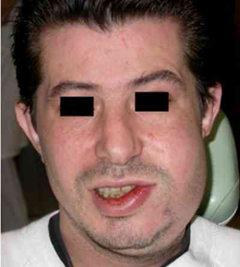
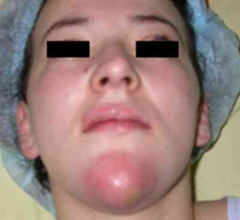
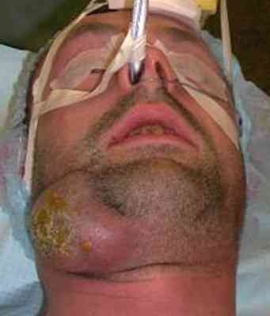
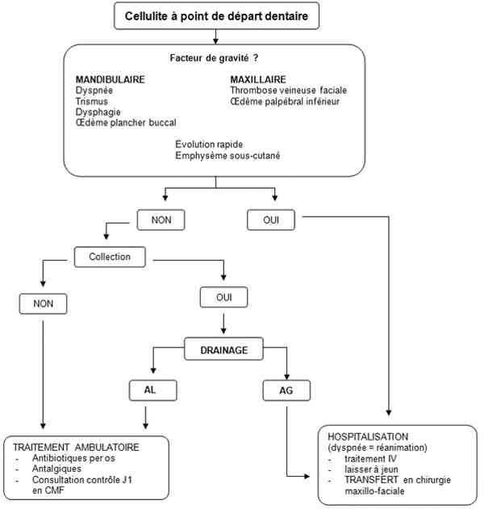

Bienvenue Sur Medical Education
Cellulites à début dentaire
Spécialité : infectieux / stomatologie /
Points importants
-
Dépister les signes de gravité : dyspnée, trismus, dysphagie/odynophagie, induration/oedème plancher buccal
-
Température : aucune valeur pronostique
-
Prise en charge urgente
-
Formes les plus graves souvent à point de départ mandibulaire
-
Pas de germes spécifiques
-
Extension :
-
vers le haut pour dents maxillaires
-
vers le bas pour dents mandibulaires : plancher buccal + cervical
-
Pas de corrélation entre l'état bucco-dentaire général et le risque de cellulite
-
Traitement médico-chirurgical : drainage en urgence si signes de gravité
Présentation clinique / CIMU
SIGNES FONCTIONNELS
- vers le haut pour dents maxillaires
- vers le bas pour dents mandibulaires : plancher buccal + cervical
Présentation clinique / CIMU
SIGNES FONCTIONNELS
Généraux
- Douleur au niveau de la région infectée
- Fièvre > 38°C (pas de valeur pronostique)
Spécifiques
-
3 formes cliniques :
- phase séreuse (inflammation seule)
- suivie par phase de collection
- existence de formes gangréneuses d'emblée (les plus graves) avec lésions cutanées et risque de lésions vasculaires par nécrose
- Dysphagie (extension vers plancher buccal, base de langue)
- Trismus (molaire mandibulaire)
- Dyspnée (voire orthopnée) : extension vers base de langue, oedème pharyngo-laryngé = pronostic vital engagé
CONTEXTE
Terrain
- Sujet jeune
- Pas de corrélation avec l'état bucco-dentaire général
Traitement usuel
- Prise d'AINS
EXAMEN CLINIQUE
Inspection
 _265 Photo Cellulite jugale
 _266 Photo Cellulite mentonnière
_267 Photo Cellulite jugale basse + cervicale
 _268 Photo Cellulite sous-mandibulaire collectée
- Limitation ouverture buccale (trismus) si atteinte molaire
- Odynophagie par atteinte du plancher buccal (oedème)
- Tuméfaction douloureuse et inflammatoire débordant de la zone dentaire en cause
- Orthopnée dans les cas extrêmes (due à la glossoptose par oedème)
- Délimiter au marqueur sur la peau la zone d'extension inflammatoire et noter date + heure
Palpation
-
Endobuccal :
- tuméfaction douloureuse en regard de la dent causale. Parfois zone de collection si abcédation en cours
- recherche dent mobile et ou délabrée
- induration du plancher buccal ou protraction linguale difficile ou douloureuse
-
Exobuccal :
- recherche emphysème sous-cutané : germes anaérobies
-
si atteinte dent maxillaire :
- recherche oedème palpébral inférieur et induration du sillon naso-génien (thrombose veine faciale) : risque thrombophlébite suppurée du sinus caverneux
-
si atteinte mandibulaire :
- rechercher : coulée inflammatoire cervicale cutanée
CIMU
- Tri 1-2 si dyspnée ; sinon tri 3
Signes paracliniques
BIOLOGIQUE
NFS
- Hyperleucocytose à polynucléaires neutrophiles
CRP
- Très augmentée
Ionogramme sanguin, urée et créatinine sanguine (déshydratation, insuffisance rénale)
Bilan pré-opératoire si nécessaire
- Groupe, Rhésus, RAI, NFS, ionogramme, hémostase
- Ne doit pas retarder le début du traitement médical ou chirurgical
Hémocultures
- Si fièvre > 38,5°C ou < 36,5°C et/ou frissons
IMAGERIE
TDM facial (parties molles) si point de départ maxillaire et cervico-facial si atteinte mandibulaire
- Recherche d'une collection en regard de la dent causale, son extension
- Recherche de la cause (granulome, kyste, ORN...)
- Recherche de coulées nécrotiques cervicales profondes
- Recherche thrombose vasculaire faciale
- Etat de la filière aérienne (Airway)
Panoramique (pas toujours disponible en urgence) : recherche de la dent causale (granulome, kyste, ORN...)
Diagnostic différentiel
-
Cellulite à point de départ cutané : clinique et complications identiques
-
Sub-mandibulite :
-
présence d'un sillon libre entre la mandibule et la zone inflammatoire (vrai au début mais parfois cellulite cervicale à point de départ submandibulaire)
-
pus au Wharton
-
Parotidite :
-
localisation franchement latéro-faciale
-
pus au Sténon
Traitement
TRAITEMENT PREHOSPITALIER / INTRAHOSPITALIER
- présence d'un sillon libre entre la mandibule et la zone inflammatoire (vrai au début mais parfois cellulite cervicale à point de départ submandibulaire)
- pus au Wharton
- localisation franchement latéro-faciale
- pus au Sténon
Traitement
TRAITEMENT PREHOSPITALIER / INTRAHOSPITALIER
Stabilisation initiale
- Si dyspnée : intubation ou trachéotomie en urgence
- Si oedème palpébral inférieur ou induration naso-génienne : HBPM (préventif risque élevé, pas de conférence de consensus sur la dose)
Antibiotique IV
- Antibiothérapie IV + transfert en urgence (non médicalisé)
Transfert en maxillo-faciale si
- Risque de troubles respiratoire (TDM montrant rétrécissement de la filière aérienne)
- Ou forme extensive ou rapidement progressive
- Ou signe de gravité (odynophagie, trismus, oedème du plancher buccal, dyspnée) : transfert médicalisé vers une réanimation chirurgicale
Laisser à jeun
MEDICAMENTS
- Antibiotiques : pénicilline G 5 millions x 3/j IV (Dalacine® 600 mg x 2/j IV si allergie pénicilline) + métronidazole 500 mg x 3 /j IV
- Antalgiques : paracétamol 1 g x 4/j IV
- HBPM : dose préventive forte : enoxaparine 0,4 ml S/C jusqu'à disparition de l'Œdème
-
Si intubation :
- ISR avec Etomidate® 0,3 mg/kg IVL en 30à 60 secondes + suxaméthonium 1mg/kg en IVD
- Entretien de la sédation : midazolam 2.5 à 15 mg/h IVSE + fentanyl 50à200 µg/kg IVSE
- Arrêt de tout AINS (y compris ibuprofène)
Surveillance
CLINIQUE
-
FR, FC, PA, température/4h
-
Extension de l'inflammation et/ou oedème
PARACLINIQUE
-
Hémocultures si fièvre > 38,5°C ou < 36,5°C et/ou frissons
Devenir / orientation
CRITERES D'ADMISSION
-
Cellulite extensive, septicémie, signes de choc ?
-
Présence d'un emphysème sous-cutané
-
Signe de gravité
-
Dyspnée
-
Terrain débilité, antibiothérapie adaptée per os inefficace, extension cervicale +/- médiastinale
-
Avis chirurgien maxillo-facial en urgence
CRITERES DE SORTIE
-
Infection localisée (pas de signe d'extension)
-
Pas de critère de gravité (trismus, oedème du plancher buccal, dysphagie ou odynophagie)
-
Pas de terrain débilité (diabète déséquilibré, immunodépression,...)
-
Patient compliant
ORDONNANCE DE SORTIE
-
Clamoxyl® 1 g x 3 /j (ou Dalacine 600 mg x2/j si allergie) 10 jours
-
Flagyl® 500 mg x 3 /j 10 jours
-
Efferalgan® codéiné 2 cp x3/j
RECOMMANDATIONS DE SORTIE
-
Consultation de contrôle J1 en Chirurgie maxillo-faciale et soins dentaires si besoin
Algorithme
-
Conduite à tenir
Devenir / orientation
CRITERES D'ADMISSION
- Cellulite extensive, septicémie, signes de choc ?
- Présence d'un emphysème sous-cutané
- Signe de gravité
- Dyspnée
- Terrain débilité, antibiothérapie adaptée per os inefficace, extension cervicale +/- médiastinale
- Avis chirurgien maxillo-facial en urgence
CRITERES DE SORTIE
- Infection localisée (pas de signe d'extension)
- Pas de critère de gravité (trismus, oedème du plancher buccal, dysphagie ou odynophagie)
- Pas de terrain débilité (diabète déséquilibré, immunodépression,...)
- Patient compliant
ORDONNANCE DE SORTIE
- Clamoxyl® 1 g x 3 /j (ou Dalacine 600 mg x2/j si allergie) 10 jours
- Flagyl® 500 mg x 3 /j 10 jours
- Efferalgan® codéiné 2 cp x3/j
RECOMMANDATIONS DE SORTIE
- Consultation de contrôle J1 en Chirurgie maxillo-faciale et soins dentaires si besoin
Algorithme
-
Conduite à tenir
 _629 Algorithme Algorithme : cellulite à point de départ dentaire
Bibliographie
-
Peron JM et Mangez JF. Cellulites et fistules d'origine dentaire. Encycl Méd Chir (Editions Scientifiques et Médicales Elsevier SAS, Paris), Stomatologie/Odontologie, 22-033-A-10, 2002, 14 p
-
Timour Q. Antibiotiques : avantages et inconvénients des pénicillines seules versus association pénicillines-métronidazole. EMC (Elsevier Masson SAS, Paris), Stomatologie, 22-012-B-11, 2007
Auteur(s) : Arnaud RIGOLET